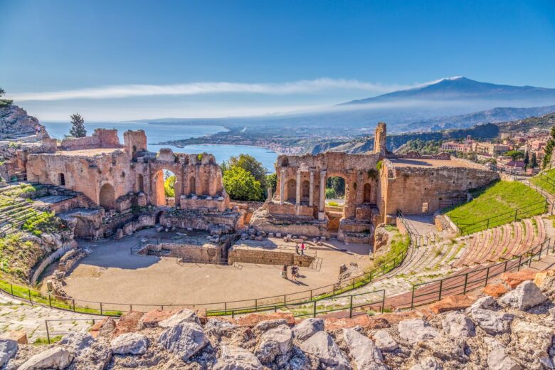
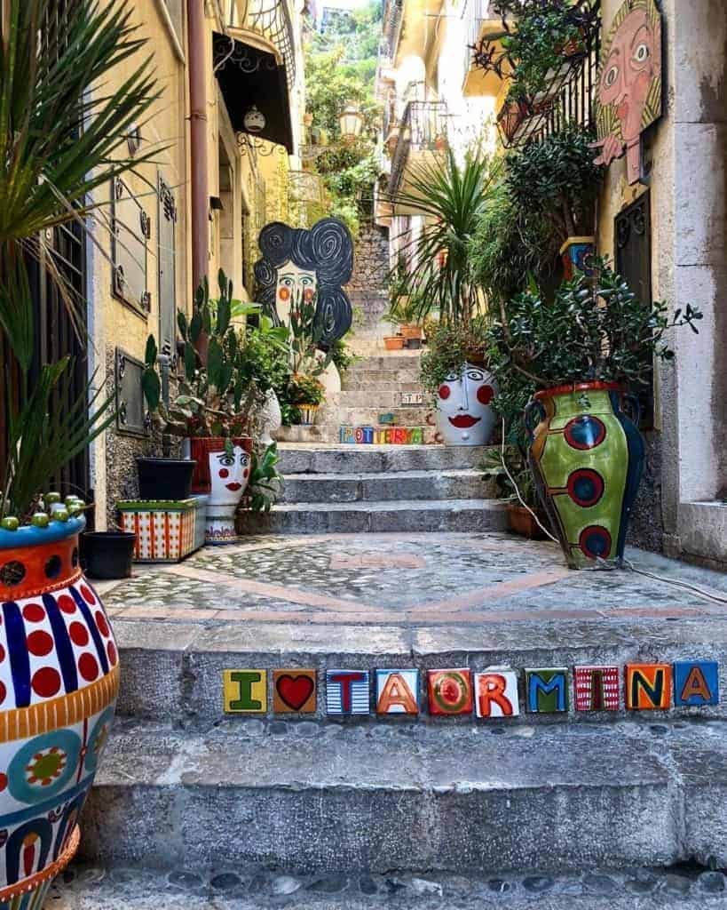
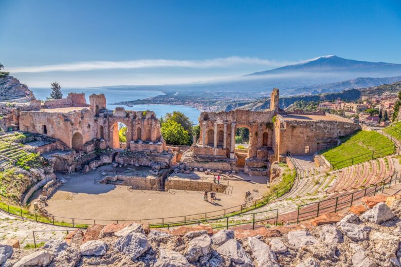
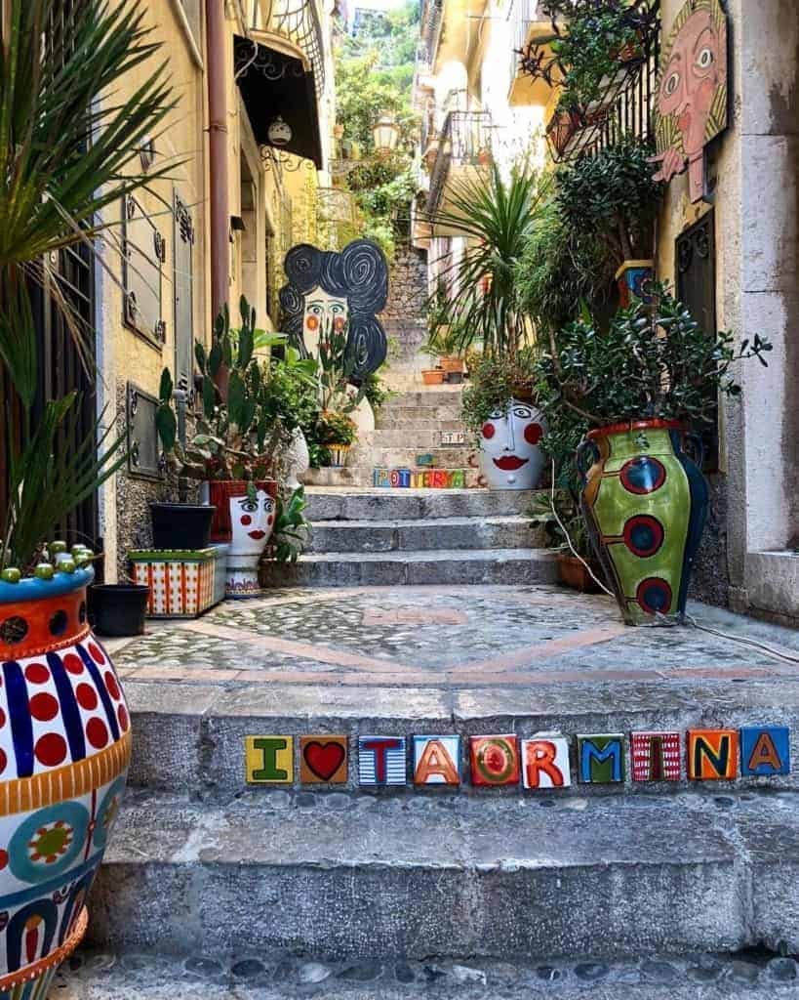

I have always loved traveling to exotic places.I have also had chances to travel a lot through the projects i have worked on so far. My most recent one was from +Erasmus on the topic Water power.It was held in Sicily,Italy. The project lasted for for 10 days.We went to see the dams in the city as well as get a chance to talk to the manager. I have also participated in the Erasmus Project held in Macedonia where we visited the solar panels in Valandovo and near Veles. Here are also some of the countries that i've visited:Malta,Spain,Greece,Ukraine,Italy,Germany(attended as a private trasnaltor),Czech Republic.....You can see them in the map shown below.